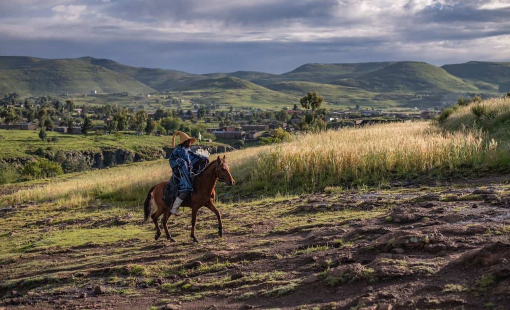
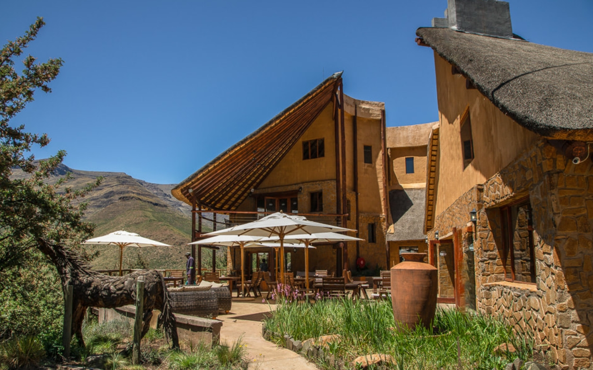

WELCOME TO LESOTHO
Lesotho,also know as kingdom in the sky. This is a country located inside South africa making it unique with its capital city being Maseru.It is regarded as an independent kingdom and it is ruled and controlled by a king .It is considered to being a country with the hightest altitude in africa. this makes it to experience snow often . The lesotho people are known cherishing thier culture with having 2 official langauges. The beauty of the Basotho land lays on it's mountanous view.
SAFARI ADVENTURES:
PONY TREKKING SAFARI
A pony trekking safari is a popular tourist attraction, especially in mountainous countries like Lesotho. It involves riding strong Basotho ponies through natural landscapes such as the Maloti Mountains, where vehicles cannot easily go. This attraction is special because it combines adventure, nature, and culture. Tourists enjoy beautiful scenery, fresh air, and peaceful surroundings while exploring remote areas. Along the journey, they can also visit local villages and learn about Basotho traditions, making the experience more meaningful.In summary, a pony trekking safari is an exciting and unique way for tourists to explore nature and culture at the same time, offering a memorable outdoor adventure.

Experience a unique and peaceful stay with pony trekking safari accommodation, where comfort meets adventure in the heart of nature. Guests are typically hosted in cozy mountain lodges, rustic huts, or eco-friendly campsites that blend perfectly with the surrounding landscape. These accommodations are often located in scenic highlands, valleys, or near traditional villages, offering breathtaking views and a chance to connect with local culture. After a day of exploring on horseback, visitors can relax in warm, welcoming spaces that provide basic modern amenities while maintaining an authentic outdoor experience. Many stays include home-cooked meals, often prepared using local ingredients, giving tourists a taste of regional cuisine. Pony trekking safari accommodation is ideal for travelers seeking tranquility, cultural immersion, and a closer connection to nature. Whether staying in a simple village homestay or a charming lodge, guests enjoy a memorable and adventurous escape from busy city life.
